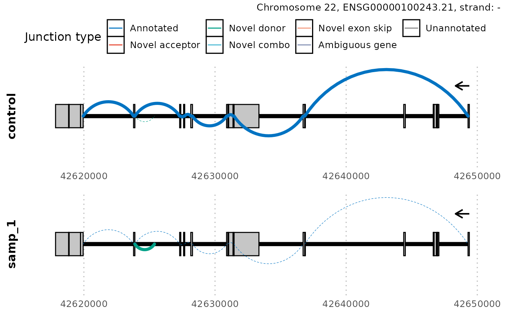
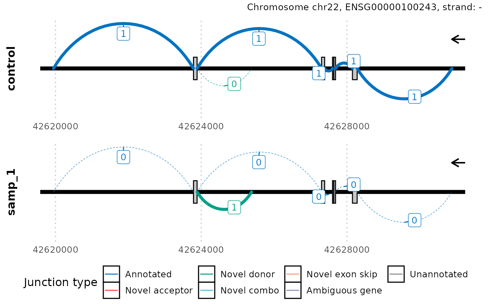

Introduction to dasper
David Zhang
UCLdavid.zhang.12@ucl.ac.uk
21 September 2021
Source:vignettes/dasper.Rmd
dasper.RmdBasics
Install dasper
R is an open-source statistical environment which can be easily modified to enhance its functionality via packages. dasper is a R package available via the Bioconductor repository for packages. R can be installed on any operating system from CRAN after which you can install dasper by using the following commands in your R session:
if (!requireNamespace("BiocManager", quietly = TRUE)) {
install.packages("BiocManager")
}
BiocManager::install("dzhang32/dasper")
## Check that you have a valid Bioconductor installation
BiocManager::valid()Required knowledge
The expected input of dasper are junctions reads (e.g. directly outputted from an aligner such as STAR or extracted from a BAM file (e.g. using megadepth) and coverage in the form of BigWig files (which can be generated from BAM files using megadepth or RSeQC). dasper is based on many other packages and in particular in those that have implemented the infrastructure needed for dealing with RNA-sequencing data. The packages SummarizedExperiment and GenomicRanges are used throughout, therefore familiarity with these packages will greatly help in interpreting the output of dasper.
If you are asking yourself the question “Where do I start using Bioconductor?” you might be interested in this blog post. Or if you find the structure of a SummarizedExperiment unclear, you might consider checking out this manual.
Asking for help
As package developers, we try to explain clearly how to use our packages and in which order to use the functions. But R and Bioconductor have a steep learning curve so it is critical to learn where to ask for help. The blog post quoted above mentions some but we would like to highlight the Bioconductor support site as the main resource for getting help: remember to use the dasper tag and check the older posts. Other alternatives are available such as creating GitHub issues and tweeting. However, please note that if you want to receive help you should adhere to the posting guidelines. It is particularly critical that you provide a small reproducible example and your session information so package developers can track down the source of the error.
Citing dasper
We hope that dasper will be useful for your research. Please use the following information to cite the package and the overall approach. Thank you!
## Citation info
citation("dasper")
#>
#> dzhang32 (2021). _Detecting abberant splicing events from
#> RNA-sequencing data_. doi: 10.18129/B9.bioc.dasper (URL:
#> https://doi.org/10.18129/B9.bioc.dasper),
#> https://github.com/dzhang32/dasper - R package version 1.3.8, <URL:
#> http://www.bioconductor.org/packages/dasper>.
#>
#> dzhang32 (2020). "Detecting abberant splicing events from
#> RNA-sequencing data." _bioRxiv_. doi: 10.1101/TODO (URL:
#> https://doi.org/10.1101/TODO), <URL:
#> https://www.biorxiv.org/content/10.1101/TODO>.
#>
#> To see these entries in BibTeX format, use 'print(<citation>,
#> bibtex=TRUE)', 'toBibtex(.)', or set
#> 'options(citation.bibtex.max=999)'.Quick start guide
Workflow

The above workflow diagram gives a top-level overview of the available functions within dasper and describes the order in which they are intended to be run. This are broadly split into 4 categories:
-
Process junctions functions are prefixed with a junction_. They will load in your junctions into an
RangedSummarizedExperimentobject, annotate your junctions using reference annotation, filter out junctions for those that likely originate from technical noise and normalize your junction counts to allow for comparison between samples. - Process coverage functions are prefixed with a coverage_. They annotate your junctions with coverage from associated regions then normalize this coverage to allow for comparison between samples.
- Outlier detection functions are prefixed with a outlier_. They will use a outlier detection algorithm (isolation forest) to detect the most outlier/abnormal/aberrant junctions in terms of their counts and associated coverage.
-
Sashimi plots can be generated using the function
plot_sashimi. This enables you to select a gene, transcript or region of interest and plot the splicing and coverage across that region in the form of sashimi plot.
Example
dasper includes wrapper functions for the 3 major analysis steps in the workflow - processing junction data, processing coverage data, then performing outlier detection. If you are familiar with dasper or uninterested with the intermediates, you can go from start to finish using these wrappers.
Setup
First, we need to install the system dependency megadepth, which is required for the loading of coverage from BigWig files. The easiest way to do this is to run install_megadepth from the megadepth
megadepth::install_megadepth()
#> The latest megadepth version is 1.1.1
#> This is not an interactive session, therefore megadepth has been installed temporarily to
#> /tmp/RtmpyTYd3G/megadepthdasper requires reference annotation that can either be inputted as a GTF path or pre-loaded into a TxDb object as shown below.
# use GenomicState to load txdb (GENCODE v31)
ref <- GenomicState::GenomicStateHub(version = "31", genome = "hg38", filetype = "TxDb")[[1]]
#> snapshotDate(): 2021-09-10
#> loading from cache
#> Loading required package: GenomicFeatures
#> Loading required package: BiocGenerics
#> Loading required package: methods
#> Loading required package: graphics
#> Loading required package: stats
#>
#> Attaching package: 'BiocGenerics'
#> The following objects are masked from 'package:stats':
#>
#> IQR, mad, sd, var, xtabs
#> The following objects are masked from 'package:base':
#>
#> anyDuplicated, append, as.data.frame, basename, cbind, colnames,
#> dirname, do.call, duplicated, eval, evalq, Filter, Find, get, grep,
#> grepl, intersect, is.unsorted, lapply, Map, mapply, match, mget,
#> order, paste, pmax, pmax.int, pmin, pmin.int, Position, rank,
#> rbind, Reduce, rownames, sapply, setdiff, sort, table, tapply,
#> union, unique, unsplit, which.max, which.min
#> Loading required package: S4Vectors
#> Loading required package: stats4
#>
#> Attaching package: 'S4Vectors'
#> The following objects are masked from 'package:base':
#>
#> expand.grid, I, unname
#> Loading required package: IRanges
#> Loading required package: GenomeInfoDb
#> Loading required package: GenomicRanges
#> Loading required package: AnnotationDbi
#> Loading required package: Biobase
#> Welcome to Bioconductor
#>
#> Vignettes contain introductory material; view with
#> 'browseVignettes()'. To cite Bioconductor, see
#> 'citation("Biobase")', and for packages 'citation("pkgname")'.RNA-seq data in the form of junctions and BigWig files are the required raw input to dasper. For illustration, in this vignette we will use an BigWig file from the GTEx v6 data publicly hosted by recount2. In reality, users should use the BigWig files that correspond to the same samples as those your junction data originate from.
# Obtain the urls to the remotely hosted GTEx BigWig files
url <- recount::download_study(
project = "SRP012682",
type = "samples",
download = FALSE
)
#> Setting options('download.file.method.GEOquery'='auto')
#> Setting options('GEOquery.inmemory.gpl'=FALSE)
# cache the file using BiocFileCache for faster retrieval
bw_path <- dasper:::.file_cache(url[1])A small set of example junctions are included within the package, which can be used for testing the functionality of dasper.
Running dasper
Here, we run the 3 wrapper functions (junction_process, coverage_process and outlier_process) on junctions_example. These functions are designed to be compatible with usage of the %>% pipe from tidyverse. The time-limiting steps of this analysis can be run parallel using BiocParallel as shown.
library(magrittr)
outlier_scores <-
junction_process(junctions_example, ref) %>%
coverage_process(ref,
coverage_paths_case = rep(bw_path, 2),
coverage_paths_control = rep(bw_path, 3),
bp_param = BiocParallel::MulticoreParam(5)
) %>%
outlier_process(bp_param = BiocParallel::MulticoreParam(5))Comprehensive usage guide
In this section, we will run each of the 1-9 functions shown in workflow. This can be helpful for users that want to understand or modify the intermediates of the dasper pipeline or are only interested in a executing a specific step (e.g. annotating junctions using junction_annot). If you want to follow along and run this code in your R session, make sure you have followed the instructions in the section setup.
Junction processing
The first step is to load in patient (and control) junction data using junction_load. By default, this expects junction files in the format outputted by the STAR aligner (SJ.out). If the user’s junctions are in a different format you can accommodate for this by adjusting the load_func argument. The output of this will be junctions stored in a RangedSummarizedExperiment object required for the downstream dasper functions.
Additionally, users can choose to add a set of control junctions from GTEx v6 (publicly available through recount2) using the argument controls. This may be useful if the user only has RNA-seq data from only a single or small number of patients, which is often the case in a diagnostic setting. In this example, we arbitrarily chose to use the GTEx junctions from the fibroblast tissue. However, we would recommend matching the control tissue to the tissue from which your patient RNA-seq data was derived. The current available tissues that be selected via controls are “fibroblasts”, “lymphocytes”, “skeletal_muscle” and “whole_blood”.
junctions_example_1_path <-
system.file(
"extdata",
"junctions_example_1.txt",
package = "dasper",
mustWork = TRUE
)
junctions_example_2_path <-
system.file(
"extdata",
"junctions_example_2.txt",
package = "dasper",
mustWork = TRUE
)
# only keep chromosomes 21 + 22 for speed
junctions <-
junction_load(
junction_paths = c(
junctions_example_1_path,
junctions_example_2_path
),
controls = "fibroblasts",
chrs = c("chr21", "chr22")
)
#> [1] "2021-09-21 16:52:50 - Loading junctions for sample 1/2..."
#> [1] "2021-09-21 16:52:50 - Loading junctions for sample 2/2..."
#> [1] "2021-09-21 16:52:50 - Adding control junctions..."
#> [1] "2021-09-21 16:52:50 - Downloading and importing fibroblasts junction data..."
#> [1] "2021-09-21 16:53:18 - Tidying and storing junction data as a RangedSummarizedExperiment..."
#> [1] "2021-09-21 16:53:20 - done!"
junctions
#> class: RangedSummarizedExperiment
#> dim: 97671 286
#> metadata(0):
#> assays(1): raw
#> rownames: NULL
#> rowData names(0):
#> colnames(286): count_1 count_2 ... gtex_56472 gtex_57475
#> colData names(2): samp_id case_controlNext, we will annotate our junctions using junction_annot. Using reference annotation inputted via ref, this will classify junctions into the categories “annotated”, “novel_acceptor”, “novel_donor”, “novel_combo”, “novel_exon_skip”, “ambig_gene” and “unannotated”. Additionally, the genes/transcripts/exons that each junction overlaps will be stored in the SummarizedExperiment::rowData. This information is necessary for the downstream dasper functions but can also be useful independently if user’s are interested in for example, only retrieving the annotated/unannotated junctions.
# take only the first 5 samples (2 cases, 3 controls)
# to increase the speed of the vignette
junctions <- junctions[, 1:5]
junctions <- junction_annot(junctions, ref)
#> [1] "2021-09-21 16:53:20 - Obtaining co-ordinates of annotated exons and junctions..."
#> [1] "2021-09-21 16:53:34 - Getting junction annotation using overlapping exons..."
#> [1] "2021-09-21 16:53:36 - Tidying junction annotation..."
#> [1] "2021-09-21 16:53:37 - Deriving junction categories..."
#> [1] "2021-09-21 16:53:42 - done!"
head(SummarizedExperiment::rowData(junctions))
#> DataFrame with 6 rows and 14 columns
#> in_ref gene_id_start
#> <logical> <CharacterList>
#> 1 FALSE
#> 2 TRUE ENSG00000277117.4
#> 3 TRUE ENSG00000277117.4
#> 4 FALSE
#> 5 FALSE
#> 6 FALSE
#> tx_name_start exon_id_start
#> <CharacterList> <IntegerList>
#> 1
#> 2 ENST00000612610.4,ENST00000620481.4,ENST00000623960.3,... 695012,695013
#> 3 ENST00000612610.4,ENST00000620481.4,ENST00000623960.3,... 695014,695015
#> 4
#> 5
#> 6
#> strand_start exon_width_start gene_id_end
#> <CharacterList> <IntegerList> <CharacterList>
#> 1
#> 2 + 291,291 ENSG00000277117.4
#> 3 + 165,165 ENSG00000277117.4
#> 4
#> 5
#> 6
#> tx_name_end exon_id_end
#> <CharacterList> <IntegerList>
#> 1
#> 2 ENST00000612610.4,ENST00000620481.4,ENST00000623960.3,... 695014,695015
#> 3 ENST00000612610.4,ENST00000620481.4,ENST00000623960.3,... 695016,695017
#> 4
#> 5
#> 6
#> strand_end exon_width_end gene_id_junction strand_junction type
#> <CharacterList> <IntegerList> <CharacterList> <CharacterList> <factor>
#> 1 * unannotated
#> 2 + 165,165 ENSG00000277117.4 + annotated
#> 3 + 36,36 ENSG00000277117.4 + annotated
#> 4 * unannotated
#> 5 * unannotated
#> 6 * unannotatedWe will then filter our junctions using junction_filter. You have the option of choosing to filter by count, width, type (annotation category) and whether junctions overlap a particular genomic region. The default settings shown below filter only by count and require a junction to have at least 5 reads in at least 1 sample to be kept in.
junctions <- junction_filter(junctions,
count_thresh = c(raw = 5),
n_samp = c(raw = 1)
)
#> [1] "2021-09-21 16:53:42 - Filtering junctions..."
#> [1] "2021-09-21 16:53:42 - by count..."
#> [1] "2021-09-21 16:53:42 - done!"
junctions
#> class: RangedSummarizedExperiment
#> dim: 4873 5
#> metadata(0):
#> assays(1): raw
#> rownames: NULL
#> rowData names(14): in_ref gene_id_start ... strand_junction type
#> colnames(5): count_1 count_2 gtex_54020 gtex_51495 gtex_56930
#> colData names(2): samp_id case_controlWe can then normalize our raw junctions counts into a proportion-spliced-in using junction_norm. This will first cluster each junction by finding all other junctions that share an acceptor or donor site with it. Then, calculate the normalized counts by dividing the number of reads supporting each junction with the total number of reads in it’s associated cluster.
junctions <- junction_norm(junctions)
#> [1] "2021-09-21 16:53:43 - Clustering junctions..."
#> [1] "2021-09-21 16:53:43 - Normalising junction counts..."
#> [1] "2021-09-21 16:53:44 - done!"
# save a separate object for plotting
junctions_normed <- junctions
# show the raw counts
tail(SummarizedExperiment::assays(junctions)[["raw"]])
#> count_1 count_2 gtex_54020 gtex_51495 gtex_56930
#> [4868,] 0 0 2 4 6
#> [4869,] 0 0 39 20 54
#> [4870,] 0 0 5 2 1
#> [4871,] 0 0 82 57 125
#> [4872,] 0 9 0 0 0
#> [4873,] 0 12 0 0 0
# and those after normalisation
tail(SummarizedExperiment::assays(junctions)[["norm"]])
#> count_1 count_2 gtex_54020 gtex_51495 gtex_56930
#> [4868,] 0 0.0000000 1.00000000 1.00000000 1.000000000
#> [4869,] 0 0.0000000 1.00000000 1.00000000 1.000000000
#> [4870,] 0 0.0000000 0.05747126 0.03389831 0.007936508
#> [4871,] 0 0.0000000 0.94252874 0.96610169 0.992063492
#> [4872,] 0 0.4285714 0.00000000 0.00000000 0.000000000
#> [4873,] 0 0.5714286 0.00000000 0.00000000 0.000000000Finally, we need to score each patient junction by how much it’s (normalized) counts deviate from the count distribution of the same junction in the control samples using junction_score. By default, this uses a z-score measure, however this can be modified to a user-inputted function by adjusting the argument score_func. These junction scores with be stored in the SummarizedExperiment::assays “score”.
junctions <- junction_score(junctions)
#> [1] "2021-09-21 16:53:44 - Calculating the direction of change of junctions..."
#> [1] "2021-09-21 16:53:45 - Generating junction abnormality score..."
#> [1] "2021-09-21 16:53:45 - done!"
names(SummarizedExperiment::assays(junctions))
#> [1] "raw" "norm" "direction" "score"Coverage processing
We then move on to loading and normalising the coverage across regions associated with each junction using coverage_norm. Namely, these are the 2 exonic regions flanking each junction and the intron inbetween. Given that there are 3 regions for each junction and we need to obtain coverage for every junction from every sample, this step can be very computationally intense to run. Here, dasper allows parrallelisation across samples using BiocParallel and uses the tool megadepth developed by Chris Wilks, which is significantly faster than other tools (rtracklayer and pyBigWig) for loading coverage from BigWig files (see runtime comparison).
coverage <- coverage_norm(
junctions,
ref,
coverage_paths_case = rep(bw_path, 2),
coverage_paths_control = rep(bw_path, 3),
bp_param = BiocParallel::SerialParam()
)
#> [1] "2021-09-21 16:53:45 - Obtaining exonic and intronic regions to load coverage from..."
#> [1] "2021-09-21 16:53:45 - Obtaining regions to use to normalise coverage..."
#> [1] "2021-09-21 16:53:50 - Loading coverage..."
#> [1] "2021-09-21 16:53:57 - Normalising coverage..."
#> [1] "2021-09-21 16:53:57 - done!"coverage_score can then be used to compare the coverage associated with each junction to the coverage distribution corresponding to the same region in controls. After which, junctions should have the SummarizedExperiment::assays “coverage_score”.
junctions <- coverage_score(junctions, coverage)
#> [1] "2021-09-21 16:53:57 - Generating coverage abnormality score..."
#> [1] "2021-09-21 16:53:57 - Obtaining regions with greatest coverage dysruption..."
#> [1] "2021-09-21 16:53:58 - done!"
names(SummarizedExperiment::assays(junctions))
#> [1] "raw" "norm" "direction" "score"
#> [5] "coverage_region" "coverage_score"Outlier processing
The last step in the dasper pipeline is to use the “scores” and “coverage scores” as input into an outlier detection model. This involves using outlier_detect to score each junction in each sample by how aberrant it looks. The outputted scores will be stored in the SummarizedExperiment::assays “outlier_score”. This step can be can be parallelised using BiocParallel. The fit of the isolation forest may fluctuate depending on it’s intial random_state. For reproducibility you can avoid this by setting the parameter random_state to an fixed integer (for more details on the isolation forest model see https://scikit-learn.org/stable/modules/generated/sklearn.ensemble.IsolationForest.html).
junctions <- outlier_detect(
junctions,
bp_param = BiocParallel::SerialParam(),
random_state = 32L
)
#> [1] "2021-09-21 16:53:58 - generating outlier scores for sample 1/2"
#> [1] "2021-09-21 16:54:01 - fitting outlier detection model with parameters: behaviour=deprecated, bootstrap=FALSE, contamination=auto, max_features=1, max_samples=auto, n_estimators=100, n_jobs=NULL, random_state=32, verbose=0, warm_start=FALSE"
#> [1] "2021-09-21 16:54:01 - fitting outlier detection model with parameters: behaviour=deprecated, bootstrap=FALSE, contamination=auto, max_features=1, max_samples=auto, n_estimators=100, n_jobs=NULL, random_state=32, verbose=0, warm_start=FALSE"
#> [1] "2021-09-21 16:54:01 - generating outlier scores for sample 2/2"
#> [1] "2021-09-21 16:54:02 - fitting outlier detection model with parameters: behaviour=deprecated, bootstrap=FALSE, contamination=auto, max_features=1, max_samples=auto, n_estimators=100, n_jobs=NULL, random_state=32, verbose=0, warm_start=FALSE"
#> [1] "2021-09-21 16:54:02 - fitting outlier detection model with parameters: behaviour=deprecated, bootstrap=FALSE, contamination=auto, max_features=1, max_samples=auto, n_estimators=100, n_jobs=NULL, random_state=32, verbose=0, warm_start=FALSE"
#> [1] "2021-09-21 16:54:02 - done!"
names(SummarizedExperiment::assays(junctions))
#> [1] "raw" "norm" "direction" "score"
#> [5] "coverage_region" "coverage_score" "outlier_score"Finally, outlier_aggregate will aggregate the junction-level “outlier_scores” to a cluster level. The returned outlier_scores object contains a DataFrame with each row detailing a cluster in terms of how aberrant it looks. The gene_id_cluster column describes the gene linked to each cluster, derived from the gene annotation returned by junction_annot. Splicing events are ranked in the rank column with 1 referring to the most aberrant splicing event in that patient. Details of the specific junctions that look the most aberrant for each cluster can be found in the junctions column.
outlier_scores <- outlier_aggregate(junctions, samp_id_col = "samp_id", )
#> [1] "2021-09-21 16:54:02 - Aggregating outlier scores to cluster level... "
#> [1] "2021-09-21 16:54:03 - Annotating clusters with gene details..."
#> [1] "2021-09-21 16:54:03 - done!"
head(outlier_scores)
#> DataFrame with 6 rows and 6 columns
#> samp_id cluster_index mean_outlier_score rank gene_id_cluster
#> <character> <character> <numeric> <numeric> <CharacterList>
#> 1 samp_1 4123 -0.200174 1 ENSG00000100243.21
#> 2 samp_1 1286 -0.199448 2 ENSG00000142156.14
#> 3 samp_1 3993 -0.189962 3 ENSG00000100418.8
#> 4 samp_1 1000 -0.158565 4 ENSG00000160213.7
#> 5 samp_1 3456 -0.156321 5 ENSG00000100129.18
#> 6 samp_1 3462 -0.155961 6 ENSG00000100129.18
#> junctions
#> <list>
#> 1 4123: 1:-0.219912:...,4124:-1:-0.180436:...,...
#> 2 1287:-1:-0.225970:...,1288: 1:-0.172927:...,...
#> 3 3993: 1:-0.134843:...,3994:-1:-0.245081:...,...
#> 4 1000: 1:-0.119976:...,1001:-1:-0.197153:...,...
#> 5 3456: 1:-0.121972:...,3457:-1:-0.190670:...,...
#> 6 3462: 1:-0.105657:...,3463:-1:-0.206265:...,...Sashimi plots
In order to help further inspection of the candidate genes with abberrant splicing returned by dasper, we also include functions to visualise splicing across genes/transcripts/regions of interest. For example, you could visualise the gene with the most aberrant cluster in samp_1.
# take gene_id of the cluster ranked 1
gene_id <- unlist(outlier_scores[["gene_id_cluster"]][1])
plot_sashimi(
junctions_normed,
ref,
case_id = list(samp_id = "samp_1"),
gene_tx_id = gene_id,
gene_tx_col = "gene_id",
count_label = FALSE
)
Often regions of splicing can be very complex within a gene/transcript. In which case, you may consider zooming in on a specific region of interest using the argument region. Furthermore, the thickness of the lines represents the normalized counts of each junction however in this way, it can be difficult to accurately differentiate junctions that have similar counts. Users may want to add a label representing the count of each junction using the argument count_label.
plot_sashimi(junctions_normed,
ref,
case_id = list(samp_id = "samp_1"),
gene_tx_id = gene_id,
gene_tx_col = "gene_id",
region = GenomicRanges::GRanges("chr22:42620000-42630000"),
count_label = TRUE
)
Reproducibility
The dasper package (dzhang32, 2021) was made possible thanks to:
- R (R Core Team, 2021)
- BiocStyle (Oleś, 2021)
- RefManageR (McLean, 2017)
- knitr (Xie, 2021)
- rmarkdown (Allaire, Xie, McPherson, Luraschi, Ushey, Atkins, Wickham, Cheng, Chang, and Iannone, 2021)
- sessioninfo (Csárdi, core, Wickham, Chang, Flight, Müller, and Hester, 2018)
- testthat (Wickham, 2011)
This package was developed using biocthis.
Code for creating the vignette
## Create the vignette
library("rmarkdown")
system.time(render("dasper.Rmd", "BiocStyle::html_document"))
## Extract the R code
library("knitr")
knit("dasper.Rmd", tangle = TRUE)Date the vignette was generated.
#> [1] "2021-09-21 16:54:09 UTC"Wallclock time spent generating the vignette.
#> Time difference of 1.722 minsR session information.
#> ─ Session info ───────────────────────────────────────────────────────────────────────────────────────────────────────
#> setting value
#> version R version 4.1.1 (2021-08-10)
#> os Ubuntu 20.04.3 LTS
#> system x86_64, linux-gnu
#> ui X11
#> language (EN)
#> collate en_US.UTF-8
#> ctype en_US.UTF-8
#> tz UTC
#> date 2021-09-21
#>
#> ─ Packages ───────────────────────────────────────────────────────────────────────────────────────────────────────────
#> package * version date lib source
#> abind 1.4-5 2016-07-21 [1] RSPM (R 4.1.0)
#> AnnotationDbi * 1.55.1 2021-06-07 [1] Bioconductor
#> AnnotationHub 3.1.5 2021-08-12 [1] Bioconductor
#> assertthat 0.2.1 2019-03-21 [1] RSPM (R 4.1.0)
#> backports 1.2.1 2020-12-09 [1] RSPM (R 4.1.0)
#> base64enc 0.1-3 2015-07-28 [1] RSPM (R 4.1.0)
#> basilisk 1.5.0 2021-05-19 [1] Bioconductor
#> basilisk.utils 1.5.0 2021-05-19 [1] Bioconductor
#> Biobase * 2.53.0 2021-05-19 [1] Bioconductor
#> BiocFileCache 2.1.1 2021-06-23 [1] Bioconductor
#> BiocGenerics * 0.39.2 2021-08-18 [1] Bioconductor
#> BiocIO 1.3.0 2021-05-19 [1] Bioconductor
#> BiocManager 1.30.16 2021-06-15 [2] CRAN (R 4.1.1)
#> BiocParallel 1.27.9 2021-09-19 [1] Bioconductor
#> BiocStyle * 2.21.3 2021-06-16 [1] Bioconductor
#> BiocVersion 3.14.0 2021-05-19 [2] Bioconductor
#> biomaRt 2.49.4 2021-08-12 [1] Bioconductor
#> Biostrings 2.61.2 2021-08-04 [1] Bioconductor
#> bit 4.0.4 2020-08-04 [1] RSPM (R 4.1.0)
#> bit64 4.0.5 2020-08-30 [1] RSPM (R 4.1.0)
#> bitops 1.0-7 2021-04-24 [1] RSPM (R 4.1.0)
#> blob 1.2.2 2021-07-23 [1] RSPM (R 4.1.0)
#> bookdown 0.24 2021-09-02 [1] CRAN (R 4.1.1)
#> broom 0.7.9 2021-07-27 [1] RSPM (R 4.1.0)
#> BSgenome 1.61.0 2021-05-19 [1] Bioconductor
#> bslib 0.3.0 2021-09-02 [1] CRAN (R 4.1.1)
#> bumphunter 1.35.0 2021-05-19 [1] Bioconductor
#> cachem 1.0.6 2021-08-19 [2] RSPM (R 4.1.0)
#> car 3.0-11 2021-06-27 [1] RSPM (R 4.1.0)
#> carData 3.0-4 2020-05-22 [1] RSPM (R 4.1.0)
#> cellranger 1.1.0 2016-07-27 [1] RSPM (R 4.1.0)
#> checkmate 2.0.0 2020-02-06 [1] RSPM (R 4.1.0)
#> cli 3.0.1 2021-07-17 [2] RSPM (R 4.1.0)
#> cluster 2.1.2 2021-04-17 [3] CRAN (R 4.1.1)
#> cmdfun 1.0.2 2020-10-10 [1] RSPM (R 4.1.0)
#> codetools 0.2-18 2020-11-04 [3] CRAN (R 4.1.1)
#> colorspace 2.0-2 2021-06-24 [1] RSPM (R 4.1.0)
#> cowplot 1.1.1 2020-12-30 [1] RSPM (R 4.1.0)
#> crayon 1.4.1 2021-02-08 [2] RSPM (R 4.1.0)
#> curl 4.3.2 2021-06-23 [2] RSPM (R 4.1.0)
#> dasper * 1.3.8 2021-09-21 [1] Bioconductor
#> data.table 1.14.0 2021-02-21 [1] RSPM (R 4.1.0)
#> DBI 1.1.1 2021-01-15 [1] RSPM (R 4.1.0)
#> dbplyr 2.1.1 2021-04-06 [1] RSPM (R 4.1.0)
#> DelayedArray 0.19.3 2021-09-12 [1] Bioconductor
#> derfinder 1.27.3 2021-09-15 [1] Bioconductor
#> derfinderHelper 1.27.1 2021-08-05 [1] Bioconductor
#> desc 1.3.0 2021-03-05 [2] RSPM (R 4.1.0)
#> digest 0.6.27 2020-10-24 [2] RSPM (R 4.1.0)
#> dir.expiry 1.1.0 2021-05-19 [1] Bioconductor
#> doRNG 1.8.2 2020-01-27 [1] RSPM (R 4.1.0)
#> downloader 0.4 2015-07-09 [1] RSPM (R 4.1.0)
#> dplyr 1.0.7 2021-06-18 [2] RSPM (R 4.1.0)
#> ellipsis 0.3.2 2021-04-29 [2] RSPM (R 4.1.0)
#> evaluate 0.14 2019-05-28 [2] RSPM (R 4.1.0)
#> fansi 0.5.0 2021-05-25 [2] RSPM (R 4.1.0)
#> farver 2.1.0 2021-02-28 [1] RSPM (R 4.1.0)
#> fastmap 1.1.0 2021-01-25 [2] RSPM (R 4.1.0)
#> filelock 1.0.2 2018-10-05 [1] RSPM (R 4.1.0)
#> forcats 0.5.1 2021-01-27 [1] RSPM (R 4.1.0)
#> foreach 1.5.1 2020-10-15 [1] RSPM (R 4.1.0)
#> foreign 0.8-81 2020-12-22 [3] CRAN (R 4.1.1)
#> Formula 1.2-4 2020-10-16 [1] RSPM (R 4.1.0)
#> fs 1.5.0 2020-07-31 [2] RSPM (R 4.1.0)
#> generics 0.1.0 2020-10-31 [2] RSPM (R 4.1.0)
#> GenomeInfoDb * 1.29.8 2021-09-05 [1] Bioconductor
#> GenomeInfoDbData 1.2.6 2021-07-30 [1] Bioconductor
#> GenomicAlignments 1.29.0 2021-05-19 [1] Bioconductor
#> GenomicFeatures * 1.45.2 2021-08-26 [1] Bioconductor
#> GenomicFiles 1.29.0 2021-05-19 [1] Bioconductor
#> GenomicRanges * 1.45.0 2021-05-19 [1] Bioconductor
#> GenomicState 0.99.9 2021-07-30 [1] Bioconductor
#> GEOquery 2.61.0 2021-05-19 [1] Bioconductor
#> ggplot2 3.3.5 2021-06-25 [1] RSPM (R 4.1.0)
#> ggpubr 0.4.0 2020-06-27 [1] RSPM (R 4.1.0)
#> ggrepel 0.9.1 2021-01-15 [1] RSPM (R 4.1.0)
#> ggsci 2.9 2018-05-14 [1] RSPM (R 4.1.0)
#> ggsignif 0.6.3 2021-09-09 [1] CRAN (R 4.1.1)
#> glue 1.4.2 2020-08-27 [2] RSPM (R 4.1.0)
#> gridExtra 2.3 2017-09-09 [1] RSPM (R 4.1.0)
#> gtable 0.3.0 2019-03-25 [1] RSPM (R 4.1.0)
#> haven 2.4.3 2021-08-04 [1] CRAN (R 4.1.1)
#> here 1.0.1 2020-12-13 [1] RSPM (R 4.1.0)
#> highr 0.9 2021-04-16 [2] RSPM (R 4.1.0)
#> Hmisc 4.5-0 2021-02-28 [1] RSPM (R 4.1.0)
#> hms 1.1.0 2021-05-17 [1] RSPM (R 4.1.0)
#> htmlTable 2.2.1 2021-05-18 [1] RSPM (R 4.1.0)
#> htmltools 0.5.2 2021-08-25 [1] CRAN (R 4.1.1)
#> htmlwidgets 1.5.4 2021-09-08 [1] CRAN (R 4.1.1)
#> httpuv 1.6.3 2021-09-09 [1] CRAN (R 4.1.1)
#> httr 1.4.2 2020-07-20 [2] RSPM (R 4.1.0)
#> interactiveDisplayBase 1.31.2 2021-07-30 [1] Bioconductor
#> IRanges * 2.27.2 2021-08-18 [1] Bioconductor
#> iterators 1.0.13 2020-10-15 [1] RSPM (R 4.1.0)
#> jpeg 0.1-9 2021-07-24 [1] RSPM (R 4.1.0)
#> jquerylib 0.1.4 2021-04-26 [1] RSPM (R 4.1.0)
#> jsonlite 1.7.2 2020-12-09 [2] RSPM (R 4.1.0)
#> KEGGREST 1.33.0 2021-05-19 [1] Bioconductor
#> knitr 1.34 2021-09-09 [2] RSPM (R 4.1.0)
#> labeling 0.4.2 2020-10-20 [1] RSPM (R 4.1.0)
#> later 1.3.0 2021-08-18 [1] CRAN (R 4.1.1)
#> lattice 0.20-44 2021-05-02 [3] CRAN (R 4.1.1)
#> latticeExtra 0.6-29 2019-12-19 [1] RSPM (R 4.1.0)
#> lifecycle 1.0.0 2021-02-15 [2] RSPM (R 4.1.0)
#> limma 3.49.4 2021-08-08 [1] Bioconductor
#> locfit 1.5-9.4 2020-03-25 [1] RSPM (R 4.1.0)
#> lubridate 1.7.10 2021-02-26 [1] RSPM (R 4.1.0)
#> magrittr 2.0.1 2020-11-17 [2] RSPM (R 4.1.0)
#> Matrix 1.3-4 2021-06-01 [3] CRAN (R 4.1.1)
#> MatrixGenerics 1.5.4 2021-08-26 [1] Bioconductor
#> matrixStats 0.61.0 2021-09-17 [1] CRAN (R 4.1.1)
#> megadepth 1.3.3 2021-09-10 [1] Bioconductor
#> memoise 2.0.0 2021-01-26 [2] RSPM (R 4.1.0)
#> mime 0.11 2021-06-23 [2] RSPM (R 4.1.0)
#> munsell 0.5.0 2018-06-12 [1] RSPM (R 4.1.0)
#> nnet 7.3-16 2021-05-03 [3] CRAN (R 4.1.1)
#> openxlsx 4.2.4 2021-06-16 [1] RSPM (R 4.1.0)
#> pillar 1.6.2 2021-07-29 [2] RSPM (R 4.1.0)
#> pkgconfig 2.0.3 2019-09-22 [2] RSPM (R 4.1.0)
#> pkgdown 1.6.1.9001 2021-09-21 [1] Github (r-lib/pkgdown@85d8beb)
#> pkgload 1.2.2 2021-09-11 [2] RSPM (R 4.1.0)
#> plyr 1.8.6 2020-03-03 [1] RSPM (R 4.1.0)
#> plyranges 1.13.1 2021-06-28 [1] Bioconductor
#> png 0.1-7 2013-12-03 [1] RSPM (R 4.1.0)
#> prettyunits 1.1.1 2020-01-24 [2] RSPM (R 4.1.0)
#> progress 1.2.2 2019-05-16 [1] RSPM (R 4.1.0)
#> promises 1.2.0.1 2021-02-11 [1] RSPM (R 4.1.0)
#> purrr 0.3.4 2020-04-17 [2] RSPM (R 4.1.0)
#> qvalue 2.25.0 2021-05-19 [1] Bioconductor
#> R6 2.5.1 2021-08-19 [2] RSPM (R 4.1.0)
#> ragg 1.1.3 2021-06-09 [1] RSPM (R 4.1.0)
#> rappdirs 0.3.3 2021-01-31 [2] RSPM (R 4.1.0)
#> RColorBrewer 1.1-2 2014-12-07 [1] RSPM (R 4.1.0)
#> Rcpp 1.0.7 2021-07-07 [1] RSPM (R 4.1.0)
#> RCurl 1.98-1.5 2021-09-17 [1] CRAN (R 4.1.1)
#> readr 2.0.1 2021-08-10 [1] CRAN (R 4.1.1)
#> readxl 1.3.1 2019-03-13 [1] RSPM (R 4.1.0)
#> recount 1.19.2 2021-08-11 [1] Bioconductor
#> RefManageR * 1.3.0 2020-11-13 [1] RSPM (R 4.1.0)
#> rentrez 1.2.3 2020-11-10 [1] RSPM (R 4.1.0)
#> reshape2 1.4.4 2020-04-09 [1] RSPM (R 4.1.0)
#> restfulr 0.0.13 2017-08-06 [1] RSPM (R 4.1.0)
#> reticulate 1.22 2021-09-17 [1] CRAN (R 4.1.1)
#> rio 0.5.27 2021-06-21 [1] RSPM (R 4.1.0)
#> rjson 0.2.20 2018-06-08 [1] RSPM (R 4.1.0)
#> rlang 0.4.11 2021-04-30 [2] RSPM (R 4.1.0)
#> rmarkdown 2.11 2021-09-14 [1] CRAN (R 4.1.1)
#> rngtools 1.5.2 2021-09-20 [1] CRAN (R 4.1.1)
#> rpart 4.1-15 2019-04-12 [3] CRAN (R 4.1.1)
#> rprojroot 2.0.2 2020-11-15 [2] RSPM (R 4.1.0)
#> Rsamtools 2.9.1 2021-06-17 [1] Bioconductor
#> RSQLite 2.2.8 2021-08-21 [1] CRAN (R 4.1.1)
#> rstatix 0.7.0 2021-02-13 [1] RSPM (R 4.1.0)
#> rstudioapi 0.13 2020-11-12 [2] RSPM (R 4.1.0)
#> rtracklayer 1.53.1 2021-08-13 [1] Bioconductor
#> S4Vectors * 0.31.3 2021-08-26 [1] Bioconductor
#> sass 0.4.0 2021-05-12 [1] RSPM (R 4.1.0)
#> scales 1.1.1 2020-05-11 [1] RSPM (R 4.1.0)
#> sessioninfo * 1.1.1 2018-11-05 [2] RSPM (R 4.1.0)
#> shiny 1.6.0 2021-01-25 [1] RSPM (R 4.1.0)
#> stringi 1.7.4 2021-08-25 [2] RSPM (R 4.1.0)
#> stringr 1.4.0 2019-02-10 [2] RSPM (R 4.1.0)
#> SummarizedExperiment 1.23.4 2021-08-25 [1] Bioconductor
#> survival 3.2-13 2021-08-24 [2] RSPM (R 4.1.0)
#> systemfonts 1.0.2 2021-05-11 [1] RSPM (R 4.1.0)
#> testthat 3.0.4 2021-07-01 [2] RSPM (R 4.1.0)
#> textshaping 0.3.5 2021-06-09 [1] RSPM (R 4.1.0)
#> tibble 3.1.4 2021-08-25 [2] RSPM (R 4.1.0)
#> tidyr 1.1.3 2021-03-03 [2] RSPM (R 4.1.0)
#> tidyselect 1.1.1 2021-04-30 [2] RSPM (R 4.1.0)
#> tzdb 0.1.2 2021-07-20 [1] RSPM (R 4.1.0)
#> utf8 1.2.2 2021-07-24 [2] RSPM (R 4.1.0)
#> VariantAnnotation 1.39.0 2021-05-19 [1] Bioconductor
#> vctrs 0.3.8 2021-04-29 [2] RSPM (R 4.1.0)
#> vroom 1.5.5 2021-09-14 [1] CRAN (R 4.1.1)
#> waldo 0.3.1 2021-09-14 [2] RSPM (R 4.1.1)
#> withr 2.4.2 2021-04-18 [2] RSPM (R 4.1.0)
#> xfun 0.26 2021-09-14 [2] RSPM (R 4.1.1)
#> XML 3.99-0.8 2021-09-17 [1] CRAN (R 4.1.1)
#> xml2 1.3.2 2020-04-23 [2] RSPM (R 4.1.0)
#> xtable 1.8-4 2019-04-21 [1] RSPM (R 4.1.0)
#> XVector 0.33.0 2021-05-19 [1] Bioconductor
#> yaml 2.2.1 2020-02-01 [2] RSPM (R 4.1.0)
#> zip 2.2.0 2021-05-31 [2] RSPM (R 4.1.0)
#> zlibbioc 1.39.0 2021-05-19 [1] Bioconductor
#>
#> [1] /__w/_temp/Library
#> [2] /usr/local/lib/R/site-library
#> [3] /usr/local/lib/R/libraryBibliography
This vignette was generated using BiocStyle (Oleś, 2021) with knitr (Xie, 2021) and rmarkdown (Allaire, Xie, McPherson, et al., 2021) running behind the scenes.
Citations made with RefManageR (McLean, 2017).
[1] J. Allaire, Y. Xie, J. McPherson, et al. rmarkdown: Dynamic Documents for R. R package version 2.11. 2021. URL: https://github.com/rstudio/rmarkdown.
[2] G. Csárdi, R. core, H. Wickham, et al. sessioninfo: R Session Information. R package version 1.1.1. 2018. URL: https://github.com/r-lib/sessioninfo#readme.
[3] dzhang32. Detecting abberant splicing events from RNA-sequencing data. https://github.com/dzhang32/dasper - R package version 1.3.8. 2021. DOI: 10.18129/B9.bioc.dasper. URL: http://www.bioconductor.org/packages/dasper.
[4] M. W. McLean. “RefManageR: Import and Manage BibTeX and BibLaTeX References in R”. In: The Journal of Open Source Software (2017). DOI: 10.21105/joss.00338.
[5] A. Oleś. BiocStyle: Standard styles for vignettes and other Bioconductor documents. R package version 2.21.3. 2021. URL: https://github.com/Bioconductor/BiocStyle.
[6] R Core Team. R: A Language and Environment for Statistical Computing. R Foundation for Statistical Computing. Vienna, Austria, 2021. URL: https://www.R-project.org/.
[7] H. Wickham. “testthat: Get Started with Testing”. In: The R Journal 3 (2011), pp. 5–10. URL: https://journal.r-project.org/archive/2011-1/RJournal_2011-1_Wickham.pdf.
[8] Y. Xie. knitr: A General-Purpose Package for Dynamic Report Generation in R. R package version 1.34. 2021. URL: https://yihui.org/knitr/.